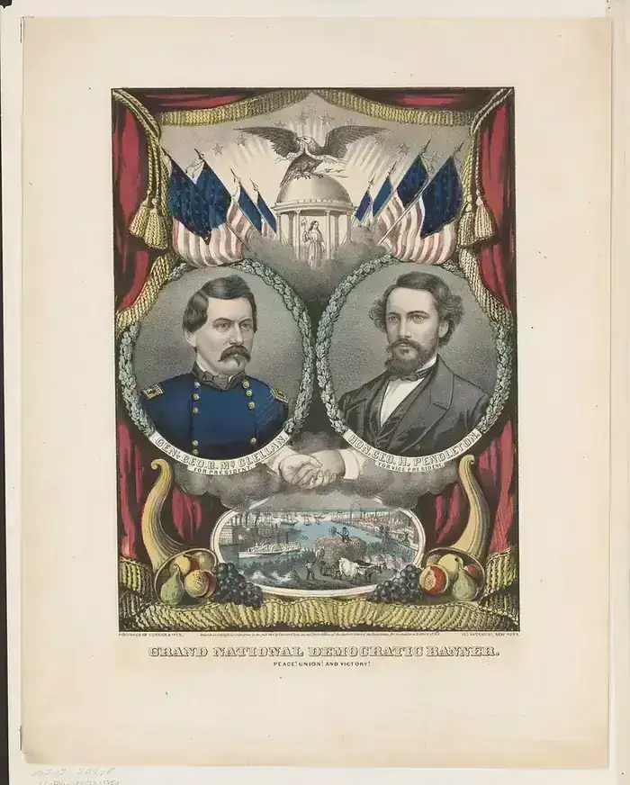
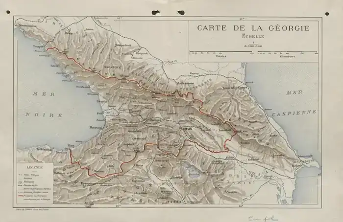

The finding
The claim is dyadic, not absolute: pairs of democracies are much less likely to go to war with each other than other pairs. Democracies fight non-democracies at least as often as autocracies do, which is why the slogan 'democracies are peaceful' is a different and false claim.
Maps, diagrams and images





The finding survived the coding disputes of the 1990s and is among the most replicated regularities in the field. Kant's 1795 essay on perpetual peace — republican constitutions, a federation of states, cosmopolitan hospitality — is the intellectual ancestor.
Candidate mechanisms divide into three: normative (democracies externalise the compromise and non-violence of domestic politics), institutional (leaders who must win elections bear audience costs and are slower to escalate), and interest-based (democracies trade and ally with each other, so they have less to fight about).
The critiques
Farber and Gowa argued that the effect is largely confined to the Cold War period and reflects shared security interests rather than regime type — that the democratic peace is a coincidence of alliance structure.
Rosato's critique is that the normative and institutional mechanisms do not survive scrutiny: democracies have fought each other's proxies, have planned for war against each other, and public opinion does not reliably restrain escalation.
Measurement is the third issue. 'Democracy' is coded by indices with thresholds, and the joint democracy cases — pairs that were both partly free — are exactly where the classification decides the result. Several apparent exceptions sit near that boundary.
The pattern is real in the standard datasets, and it is not an artefact of one coding scheme.
The mechanisms are not established. Norms, institutions and trade all predict the pattern and are hard to separate, because they correlate.
Policy inference is contested. 'Promote democracy to get peace' assumes the causal direction and the mechanism, and the record of democracy promotion is mixed at best.
The 2022 invasion of Ukraine is a reminder of the absolute claim's limits: the dyadic finding says nothing about democracies versus autocracies, which is where most wars actually happen.
The archive labels this live debate because the regularity is well documented and the explanation is not.
Why it is in the archive
Because it is the most policy-consequential finding in international relations and one of the most disputed, and because the distinction between the dyadic claim and the slogan is usually lost.
Related: the Thucydides trap, MAD stability.
Sources for this page
- Wikipedia, “Democratic peace theory” — the finding, mechanisms and critiquesen.wikipedia.org
- Kant (1795), Perpetual Peace — the original argumenten.wikipedia.org
- Rosato (2003), American Political Science Review — “The Flawed Logic of Democratic Peace Theory”doi.org
- Farber & Gowa (1995), International Security — “Polities and Peace”doi.org
Open resources on this topic
- BookDemocracy and International Conflict: An Evaluation of the Democratic Peace Proposition (Studies in Internatio — James Lee Ray · 1998 (Internet Archive, free to read)
- BookPerils of a democratic peace — Brookes, Michael A. · 1997 (Internet Archive, free to read)
- BookA Democratic peace offered for the acceptance of Pennsylvania voters — 1864 (Internet Archive, free to read)
- PapersOpen-access articles: DOAJ · PubMed Central · Internet Archive Scholar
- BooksPublic-domain and borrowable copies: Open Library · Project Gutenberg · Google Books
Cite this page
Momin, S. (2026). Democratic Peace. The Larger World Archive. https://drsamonline.github.io/LARGE_GLOBE/democratic-peace.htmlMomin, Sohil. “Democratic Peace.” The Larger World Archive, 2026, https://drsamonline.github.io/LARGE_GLOBE/democratic-peace.html.Momin, Sohil. “Democratic Peace.” The Larger World Archive, 2026. https://drsamonline.github.io/LARGE_GLOBE/democratic-peace.html.@misc{democratic2026democratic,
author = {Momin, Sohil},
title = {Democratic Peace},
year = {2026},
howpublished = {The Larger World Archive},
url = {https://drsamonline.github.io/LARGE_GLOBE/democratic-peace.html},
note = {Last reviewed 20 November 2026}
}Last reviewed 20 November 2026 · Corrections policy · this page is not peer reviewed